FRAM · Visuell profil
Logoer, ikon og de offisielle fargene til Fram, samlet for utviklere. Verdiene er hentet rett fra den grafiske profilen. Filene endres ikke av nettsiden — dette er kun referansemateriell.
Fire merkevarefarger. Klikk på en farge for å kopiere HEX-koden.
Bruk vektor (SVG) der det er mulig. Sørg for nok luft rundt logoen.
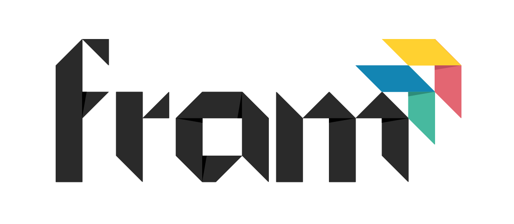
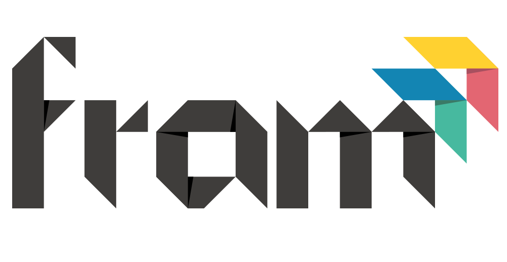
Tangram-merket alene — for favicon, app-ikon og avatarer.
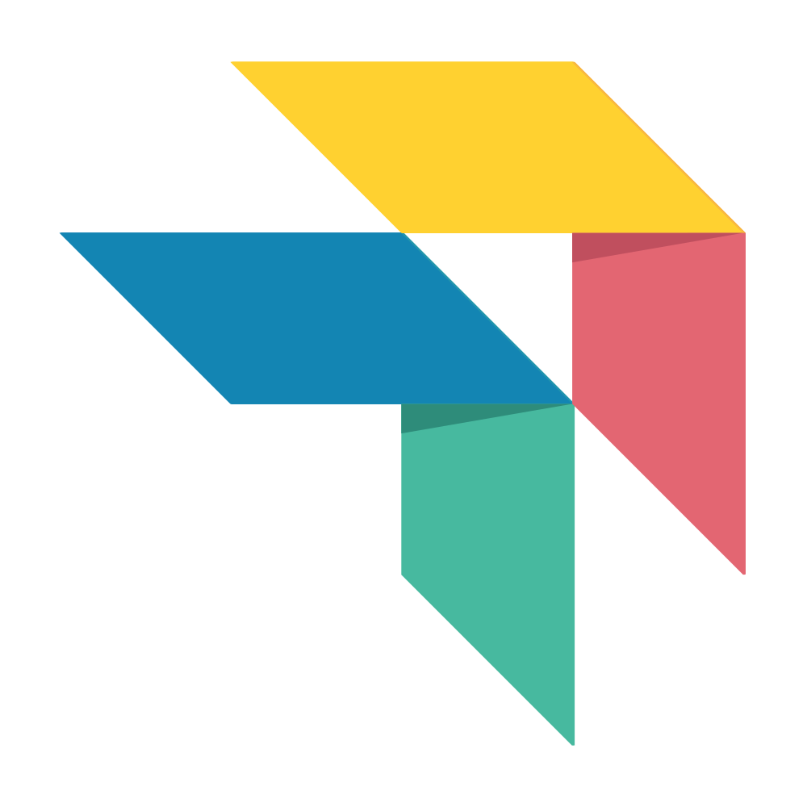
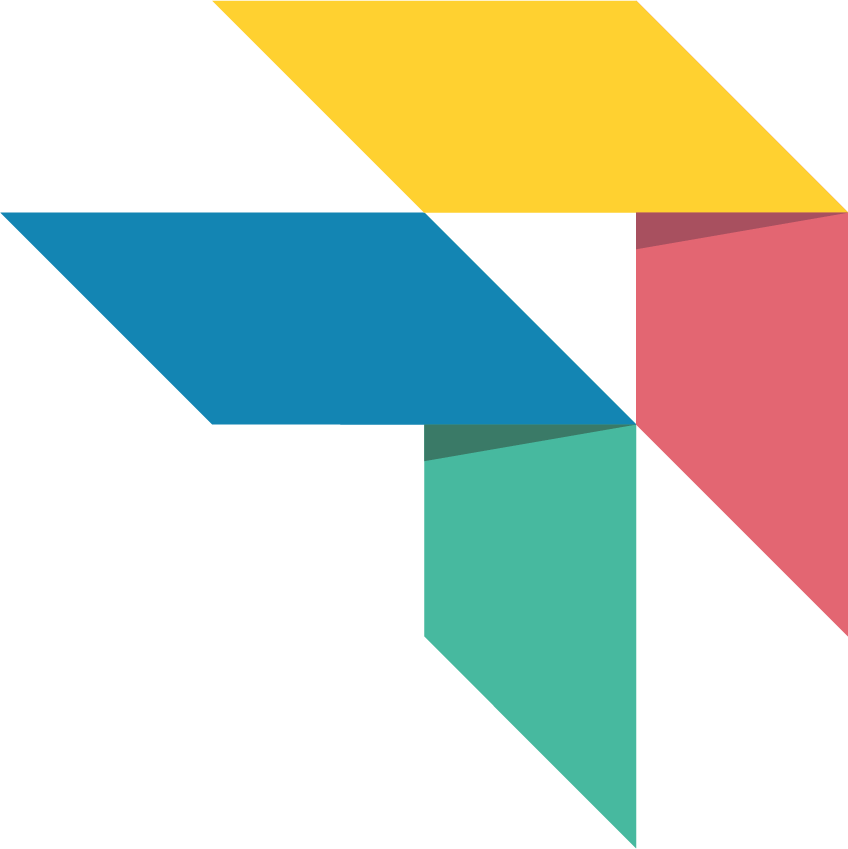
Skrifter i merkevaren.
Origram
Brukes kun i selve logoen.
Ikke bestemt
Skrift for resten av nettsiden er ikke valgt ennå.
Full grafisk profil for Fram som PDF.
Egen undermerkevare med egen nettside. Her er kun det utvikleren trenger for å lenke til og gjenkjenne Gruva — full profil ligger i PDF-en.
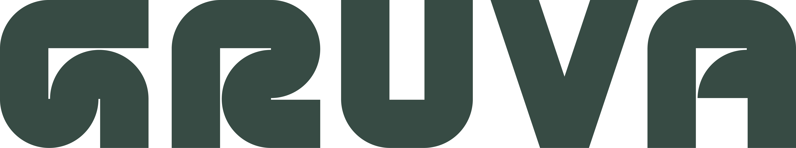
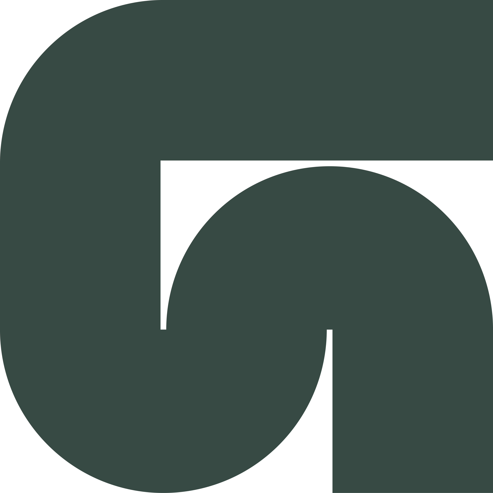
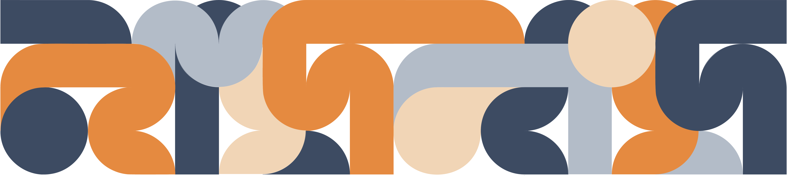
Undermerkevare for verkstedet. Bruker samme skrift som Gruva. Logoen finnes i fire farger — bruk grønn som hovedvariant.
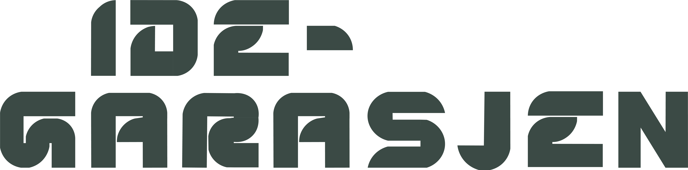
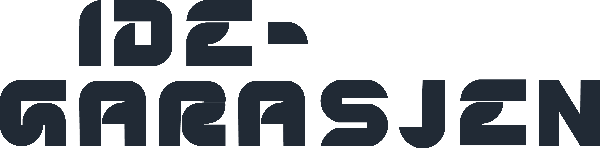
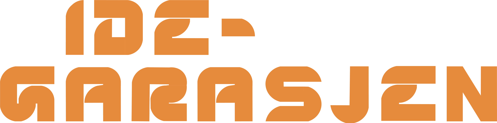